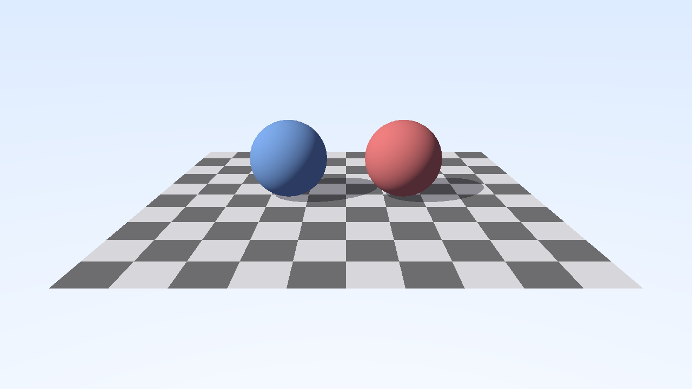

Ray Tracing
In this tutorial, you'll learn how to use hardware-accelerated ray tracing with Zenith.NET. We'll render a scene with a checkered floor and two spheres, demonstrating triangle geometry, procedural geometry (AABBs), and hard shadows.
Note
This tutorial requires a GPU with ray tracing support. Check Context.Capabilities.RayTracingSupported before using ray tracing features.
Overview
We'll create a RayTracingRenderer class that:
- Creates a checkered floor using triangle geometry
- Creates two spheres using procedural AABBs with a custom intersection shader
- Builds separate BLAS for floor and spheres, combined in a TLAS
- Implements shadow rays for hard shadows
- Creates a ray tracing pipeline with multiple hit groups
- Copies the result to the swap chain for display
Key Concepts
Two Ways to Use Ray Tracing
There are two approaches to use hardware ray tracing:
| Aspect | Ray Tracing Pipeline | Inline Ray Tracing (RayQuery) |
|---|---|---|
| Shader Stages | RayGen, Miss, ClosestHit, AnyHit, Intersection | Any shader (CS, PS, etc.) |
| Setup Complexity | Requires dedicated pipeline and hit groups | Bind acceleration structure only |
| Hit/Miss Logic | Separated into different shaders | All logic in one shader |
| Best For | Complex materials, multiple ray types | Simple queries, shadows, AO |
This tutorial covers the Ray Tracing Pipeline approach. For Inline Ray Tracing, simply bind the acceleration structure to your compute/graphics pipeline and use RayQuery in your shader.
Acceleration Structures
Ray tracing uses a two-level acceleration structure hierarchy:
- BLAS (Bottom-Level Acceleration Structure): Contains the actual geometry data. Each BLAS can store either triangle meshes or axis-aligned bounding boxes (AABBs) for procedural geometry.
- TLAS (Top-Level Acceleration Structure): Contains instances that reference one or more BLAS with transform matrices. Multiple instances can share the same BLAS with different transforms.
TLAS (scene)
├── Instance 0 → BLAS 0 (floor, triangles)
├── Instance 1 → BLAS 1 (spheres, AABBs)
├── Instance 2 → BLAS 0 (same geometry, different transform)
└── ...
Important
Acceleration structure transforms only support rotation and scale. Translation is not supported - use the geometry's world-space coordinates directly.
Ray Tracing Pipeline Stages
| Shader Stage | When Called |
|---|---|
| Ray Generation | Entry point - invoked for each pixel/thread |
| Miss | When the ray hits nothing |
| Any Hit | For each potential intersection - can accept/reject hit (alpha testing) |
| Intersection | For procedural geometry (AABBs) to compute ray-geometry intersection |
| Closest Hit | Once per ray, for the nearest accepted intersection |
Hit Groups
Hit Groups bundle shaders that work together for a specific geometry type:
| Shader | Required | Description |
|---|---|---|
| AnyHit | Optional | Called for each potential hit (alpha testing, transparency) |
| Intersection | Optional | Custom intersection for procedural geometry. Required only for AABBs, triangles use built-in intersection. |
| ClosestHit | Optional | Called for the closest intersection point |
The Renderer Class
Create a new file Renderers/RayTracingRenderer.cs:
namespace ZenithTutorials.Renderers;
internal unsafe class RayTracingRenderer : IRenderer
{
// Ray tracing shader source
private const string ShaderSource = """
struct Sphere
{
float3 Center;
float Radius;
float3 Color;
float Padding;
};
struct Payload
{
float3 Color;
float T;
};
struct ShadowPayload
{
bool InShadow;
};
struct SphereAttributes
{
float3 Normal;
};
// Resources
RaytracingAccelerationStructure scene;
RWTexture2D<float4> outputTexture;
StructuredBuffer<Sphere> spheres;
// Constants
static const float3 LightDir = normalize(float3(1.0, 1.0, -0.5));
static const float3 LightColor = float3(1.0, 0.98, 0.95);
static const float3 AmbientColor = float3(0.1, 0.1, 0.15);
[shader("raygeneration")]
void RayGen()
{
uint2 pixelCoord = DispatchRaysIndex().xy;
uint2 dimensions = DispatchRaysDimensions().xy;
// Camera setup - perspective projection
float2 uv = (float2(pixelCoord) + 0.5) / float2(dimensions);
float2 ndc = uv * 2.0 - 1.0;
ndc.y = -ndc.y;
float aspectRatio = float(dimensions.x) / float(dimensions.y);
float fov = tan(radians(45.0) * 0.5); // 45 degree FOV
float3 cameraPos = float3(0.0, 4.0, -12.0);
float3 cameraTarget = float3(0.0, 0.0, 0.0);
float3 cameraUp = float3(0.0, 1.0, 0.0);
float3 forward = normalize(cameraTarget - cameraPos);
float3 right = normalize(cross(forward, cameraUp));
float3 up = cross(right, forward);
float3 rayDir = normalize(forward + ndc.x * aspectRatio * fov * right + ndc.y * fov * up);
RayDesc ray;
ray.Origin = cameraPos;
ray.Direction = rayDir;
ray.TMin = 0.001;
ray.TMax = 1000.0;
Payload payload;
payload.Color = float3(0.0, 0.0, 0.0);
payload.T = -1.0;
TraceRay(scene, RAY_FLAG_NONE, 0xFF, 0, 0, 0, ray, payload);
// Gamma correction
float3 color = pow(payload.Color, 1.0 / 2.2);
outputTexture[pixelCoord] = float4(color, 1.0);
}
[shader("miss")]
void Miss(inout Payload payload)
{
// Sky gradient background
float3 rayDir = WorldRayDirection();
float t = 0.5 * (rayDir.y + 1.0);
payload.Color = lerp(float3(1.0, 1.0, 1.0), float3(0.5, 0.7, 1.0), t);
}
[shader("miss")]
void ShadowMiss(inout ShadowPayload payload)
{
payload.InShadow = false;
}
bool TraceShadowRay(float3 origin, float3 direction)
{
RayDesc shadowRay;
shadowRay.Origin = origin;
shadowRay.Direction = direction;
shadowRay.TMin = 0.001;
shadowRay.TMax = 1000.0;
ShadowPayload shadowPayload;
shadowPayload.InShadow = true;
TraceRay(scene,
RAY_FLAG_ACCEPT_FIRST_HIT_AND_END_SEARCH | RAY_FLAG_SKIP_CLOSEST_HIT_SHADER,
0xFF, 0, 0, 1, shadowRay, shadowPayload);
return shadowPayload.InShadow;
}
[shader("closesthit")]
void FloorClosestHit(inout Payload payload, BuiltInTriangleIntersectionAttributes attribs)
{
float3 hitPoint = WorldRayOrigin() + WorldRayDirection() * RayTCurrent();
// Checkerboard pattern
float scale = 1.0;
int checkX = int(floor(hitPoint.x * scale));
int checkZ = int(floor(hitPoint.z * scale));
bool isWhite = ((checkX + checkZ) & 1) == 0;
float3 baseColor = isWhite ? float3(0.9, 0.9, 0.9) : float3(0.2, 0.2, 0.2);
float3 normal = float3(0.0, 1.0, 0.0);
float NdotL = max(dot(normal, LightDir), 0.0);
// Shadow test
float3 shadowOrigin = hitPoint + normal * 0.001;
bool inShadow = TraceShadowRay(shadowOrigin, LightDir);
float shadow = inShadow ? 0.3 : 1.0;
float3 diffuse = baseColor * LightColor * NdotL * shadow;
float3 ambient = baseColor * AmbientColor;
payload.Color = ambient + diffuse;
payload.T = RayTCurrent();
}
[shader("intersection")]
void SphereIntersection()
{
uint sphereIndex = PrimitiveIndex();
Sphere sphere = spheres[sphereIndex];
float3 origin = ObjectRayOrigin();
float3 direction = ObjectRayDirection();
float3 oc = origin - sphere.Center;
float a = dot(direction, direction);
float b = dot(oc, direction);
float c = dot(oc, oc) - sphere.Radius * sphere.Radius;
float discriminant = b * b - a * c;
if (discriminant > 0.0)
{
float sqrtD = sqrt(discriminant);
float t1 = (-b - sqrtD) / a;
float t2 = (-b + sqrtD) / a;
float t = t1;
if (t < RayTMin() || t > RayTCurrent())
{
t = t2;
}
if (t >= RayTMin() && t <= RayTCurrent())
{
float3 hitPoint = origin + t * direction;
float3 normal = normalize(hitPoint - sphere.Center);
SphereAttributes attr;
attr.Normal = normal;
ReportHit(t, 0, attr);
}
}
}
[shader("closesthit")]
void SphereClosestHit(inout Payload payload, SphereAttributes attribs)
{
uint sphereIndex = PrimitiveIndex();
Sphere sphere = spheres[sphereIndex];
float3 hitPoint = WorldRayOrigin() + WorldRayDirection() * RayTCurrent();
float3 normal = attribs.Normal;
float NdotL = max(dot(normal, LightDir), 0.0);
// Shadow test
float3 shadowOrigin = hitPoint + normal * 0.001;
bool inShadow = TraceShadowRay(shadowOrigin, LightDir);
float shadow = inShadow ? 0.3 : 1.0;
float3 diffuse = sphere.Color * LightColor * NdotL * shadow;
float3 ambient = sphere.Color * AmbientColor;
payload.Color = ambient + diffuse;
payload.T = RayTCurrent();
}
""";
private readonly Buffer floorVertexBuffer;
private readonly Buffer floorIndexBuffer;
private readonly Buffer sphereBuffer;
private readonly Buffer aabbBuffer;
private readonly BottomLevelAccelerationStructure floorBlas;
private readonly BottomLevelAccelerationStructure sphereBlas;
private readonly TopLevelAccelerationStructure tlas;
private readonly ResourceLayout resourceLayout;
private readonly RayTracingPipeline pipeline;
private Texture? outputTexture;
private ResourceSet? resourceSet;
public RayTracingRenderer()
{
if (!App.Context.Capabilities.RayTracingSupported)
{
throw new NotSupportedException("Ray tracing is not supported on this device.");
}
Vector3[] floorVertices =
[
new(-5.0f, 0.0f, -5.0f),
new( 5.0f, 0.0f, -5.0f),
new( 5.0f, 0.0f, 5.0f),
new(-5.0f, 0.0f, 5.0f)
];
uint[] floorIndices = [0, 1, 2, 0, 2, 3];
floorVertexBuffer = App.Context.CreateBuffer(new()
{
SizeInBytes = (uint)(sizeof(Vector3) * floorVertices.Length),
StrideInBytes = (uint)sizeof(Vector3),
Flags = BufferUsageFlags.Vertex | BufferUsageFlags.AccelerationStructure
});
floorVertexBuffer.Upload(floorVertices, 0);
floorIndexBuffer = App.Context.CreateBuffer(new()
{
SizeInBytes = (uint)(sizeof(uint) * floorIndices.Length),
StrideInBytes = sizeof(uint),
Flags = BufferUsageFlags.Index | BufferUsageFlags.AccelerationStructure
});
floorIndexBuffer.Upload(floorIndices, 0);
Sphere[] sphereData =
[
new() { Center = new(-1.5f, 1.0f, 0.0f), Radius = 1.0f, Color = new(0.8f, 0.2f, 0.2f) },
new() { Center = new( 1.5f, 1.0f, 0.0f), Radius = 1.0f, Color = new(0.2f, 0.4f, 0.8f) }
];
sphereBuffer = App.Context.CreateBuffer(new()
{
SizeInBytes = (uint)(sizeof(Sphere) * sphereData.Length),
StrideInBytes = (uint)sizeof(Sphere),
Flags = BufferUsageFlags.ShaderResource
});
sphereBuffer.Upload(sphereData, 0);
Vector3[] aabbData = new Vector3[sphereData.Length * 2];
for (int i = 0; i < sphereData.Length; i++)
{
aabbData[i * 2] = sphereData[i].Center - new Vector3(sphereData[i].Radius);
aabbData[(i * 2) + 1] = sphereData[i].Center + new Vector3(sphereData[i].Radius);
}
aabbBuffer = App.Context.CreateBuffer(new()
{
SizeInBytes = (uint)(sizeof(Vector3) * aabbData.Length),
StrideInBytes = (uint)(sizeof(Vector3) * 2),
Flags = BufferUsageFlags.ShaderResource | BufferUsageFlags.AccelerationStructure
});
aabbBuffer.Upload(aabbData, 0);
CommandBuffer buildCmd = App.Context.Graphics.CommandBuffer();
floorBlas = buildCmd.BuildAccelerationStructure(new BottomLevelAccelerationStructureDesc
{
Geometries =
[
new()
{
Type = RayTracingGeometryType.Triangles,
Triangles = new()
{
VertexBuffer = floorVertexBuffer,
VertexFormat = PixelFormat.R32G32B32Float,
VertexCount = (uint)floorVertices.Length,
VertexStrideInBytes = (uint)sizeof(Vector3),
IndexBuffer = floorIndexBuffer,
IndexFormat = IndexFormat.UInt32,
IndexCount = (uint)floorIndices.Length,
Transform = Matrix4x4.Identity
},
Flags = RayTracingGeometryFlags.Opaque
}
],
Flags = AccelerationStructureBuildFlags.PreferFastTrace
});
sphereBlas = buildCmd.BuildAccelerationStructure(new BottomLevelAccelerationStructureDesc
{
Geometries =
[
new()
{
Type = RayTracingGeometryType.AABBs,
AABBs = new()
{
Buffer = aabbBuffer,
Count = (uint)sphereData.Length,
StrideInBytes = (uint)(sizeof(Vector3) * 2)
},
Flags = RayTracingGeometryFlags.Opaque
}
],
Flags = AccelerationStructureBuildFlags.PreferFastTrace
});
tlas = buildCmd.BuildAccelerationStructure(new TopLevelAccelerationStructureDesc
{
Instances =
[
new()
{
AccelerationStructure = floorBlas,
InstanceID = 0,
InstanceMask = 0xFF,
InstanceContributionToHitGroupIndex = 0,
Transform = Matrix4x4.Identity,
Flags = RayTracingInstanceFlags.None
},
new()
{
AccelerationStructure = sphereBlas,
InstanceID = 1,
InstanceMask = 0xFF,
InstanceContributionToHitGroupIndex = 1,
Transform = Matrix4x4.Identity,
Flags = RayTracingInstanceFlags.None
}
],
Flags = AccelerationStructureBuildFlags.PreferFastTrace
});
buildCmd.Submit(waitForCompletion: true);
resourceLayout = App.Context.CreateResourceLayout(new()
{
Bindings = BindingHelper.Bindings
(
new()
{
Type = ResourceType.AccelerationStructure,
Count = 1,
StageFlags = ShaderStageFlags.RayGeneration | ShaderStageFlags.ClosestHit
},
new()
{
Type = ResourceType.TextureReadWrite,
Count = 1,
StageFlags = ShaderStageFlags.RayGeneration
},
new()
{
Type = ResourceType.StructuredBuffer,
Count = 1,
StageFlags = ShaderStageFlags.Intersection | ShaderStageFlags.ClosestHit
}
)
});
using Shader rayGenShader = App.Context.LoadShaderFromSource(ShaderSource, "RayGen", ShaderStageFlags.RayGeneration);
using Shader missShader = App.Context.LoadShaderFromSource(ShaderSource, "Miss", ShaderStageFlags.Miss);
using Shader shadowMissShader = App.Context.LoadShaderFromSource(ShaderSource, "ShadowMiss", ShaderStageFlags.Miss);
using Shader floorClosestHitShader = App.Context.LoadShaderFromSource(ShaderSource, "FloorClosestHit", ShaderStageFlags.ClosestHit);
using Shader sphereIntersectionShader = App.Context.LoadShaderFromSource(ShaderSource, "SphereIntersection", ShaderStageFlags.Intersection);
using Shader sphereClosestHitShader = App.Context.LoadShaderFromSource(ShaderSource, "SphereClosestHit", ShaderStageFlags.ClosestHit);
pipeline = App.Context.CreateRayTracingPipeline(new()
{
RayGeneration = rayGenShader,
Miss = [missShader, shadowMissShader],
AnyHit = [],
Intersection = [sphereIntersectionShader],
ClosestHit = [floorClosestHitShader, sphereClosestHitShader],
HitGroups =
[
new()
{
Type = HitGroupType.Triangles,
Name = "FloorHitGroup",
ClosestHit = "FloorClosestHit"
},
new()
{
Type = HitGroupType.Procedural,
Name = "SphereHitGroup",
Intersection = "SphereIntersection",
ClosestHit = "SphereClosestHit"
}
],
ResourceLayouts = [resourceLayout],
MaxTraceRecursionDepth = 2,
MaxPayloadSizeInBytes = 16,
MaxAttributeSizeInBytes = 16
});
}
public void Update(double deltaTime)
{
}
public void Render()
{
// Create output texture if needed
outputTexture ??= App.Context.CreateTexture(new()
{
Type = TextureType.Texture2D,
Format = PixelFormat.R8G8B8A8UNorm,
Width = App.Width,
Height = App.Height,
Depth = 1,
MipLevels = 1,
ArrayLayers = 1,
SampleCount = SampleCount.Count1,
Flags = TextureUsageFlags.ShaderResource | TextureUsageFlags.UnorderedAccess
});
resourceSet ??= App.Context.CreateResourceSet(new()
{
Layout = resourceLayout,
Resources = [tlas, outputTexture, sphereBuffer]
});
CommandBuffer commandBuffer = App.Context.Graphics.CommandBuffer();
commandBuffer.SetPipeline(pipeline);
commandBuffer.SetResourceSet(resourceSet, 0);
commandBuffer.DispatchRays(App.Width, App.Height, 1);
// Copy the ray traced result to the swap chain's color target
Texture colorTarget = App.SwapChain.FrameBuffer.Desc.ColorAttachments[0].Target;
commandBuffer.CopyTexture(outputTexture,
default,
default,
colorTarget,
default,
default,
new() { Width = App.Width, Height = App.Height, Depth = 1 });
commandBuffer.Submit(waitForCompletion: true);
}
public void Resize(uint width, uint height)
{
resourceSet?.Dispose();
resourceSet = null;
outputTexture?.Dispose();
outputTexture = null;
}
public void Dispose()
{
resourceSet?.Dispose();
outputTexture?.Dispose();
pipeline.Dispose();
resourceLayout.Dispose();
tlas.Dispose();
sphereBlas.Dispose();
floorBlas.Dispose();
aabbBuffer.Dispose();
sphereBuffer.Dispose();
floorIndexBuffer.Dispose();
floorVertexBuffer.Dispose();
}
}
/// <summary>
/// Sphere definition for procedural geometry.
/// </summary>
[StructLayout(LayoutKind.Sequential)]
file struct Sphere
{
public Vector3 Center;
public float Radius;
public Vector3 Color;
public float Padding;
}
Running the Tutorial
Update your Program.cs to run the RayTracingRenderer:
using ZenithTutorials;
using ZenithTutorials.Renderers;
App.Run<RayTracingRenderer>();
App.Cleanup();
Run the application:
dotnet run
Result

Code Breakdown
Checking Ray Tracing Support
if (!App.Context.Capabilities.RayTracingSupported)
{
throw new NotSupportedException("Ray tracing is not supported on this device.");
}
Always check Capabilities.RayTracingSupported before using ray tracing features.
Acceleration Structure Setup
Build a two-level acceleration structure hierarchy:
// Floor BLAS (triangle geometry)
floorBlas = buildCmd.BuildAccelerationStructure(new BottomLevelAccelerationStructureDesc
{
Geometries =
[
new()
{
Type = RayTracingGeometryType.Triangles,
Triangles = new()
{
VertexBuffer = floorVertexBuffer,
VertexFormat = PixelFormat.R32G32B32Float,
VertexCount = (uint)floorVertices.Length,
VertexStrideInBytes = (uint)sizeof(Vector3),
IndexBuffer = floorIndexBuffer,
IndexFormat = IndexFormat.UInt32,
IndexCount = (uint)floorIndices.Length,
Transform = Matrix4x4.Identity
},
Flags = RayTracingGeometryFlags.Opaque
}
],
Flags = AccelerationStructureBuildFlags.PreferFastTrace
});
// Sphere BLAS (procedural AABB geometry)
sphereBlas = buildCmd.BuildAccelerationStructure(new BottomLevelAccelerationStructureDesc
{
Geometries =
[
new()
{
Type = RayTracingGeometryType.AABBs,
AABBs = new()
{
Buffer = aabbBuffer,
Count = (uint)sphereData.Length,
StrideInBytes = (uint)(sizeof(Vector3) * 2)
},
Flags = RayTracingGeometryFlags.Opaque
}
],
Flags = AccelerationStructureBuildFlags.PreferFastTrace
});
Combine BLAS into a TLAS with InstanceContributionToHitGroupIndex to select hit groups:
tlas = buildCmd.BuildAccelerationStructure(new TopLevelAccelerationStructureDesc
{
Instances =
[
new()
{
AccelerationStructure = floorBlas,
InstanceContributionToHitGroupIndex = 0, // Uses FloorHitGroup
Transform = Matrix4x4.Identity,
...
},
new()
{
AccelerationStructure = sphereBlas,
InstanceContributionToHitGroupIndex = 1, // Uses SphereHitGroup
Transform = Matrix4x4.Identity,
...
}
],
Flags = AccelerationStructureBuildFlags.PreferFastTrace
});
Ray Tracing Pipeline
Create a pipeline with multiple hit groups:
pipeline = App.Context.CreateRayTracingPipeline(new()
{
RayGeneration = rayGenShader,
Miss = [missShader, shadowMissShader],
AnyHit = [],
Intersection = [sphereIntersectionShader],
ClosestHit = [floorClosestHitShader, sphereClosestHitShader],
HitGroups =
[
new()
{
Type = HitGroupType.Triangles,
Name = "FloorHitGroup",
ClosestHit = "FloorClosestHit"
},
new()
{
Type = HitGroupType.Procedural,
Name = "SphereHitGroup",
Intersection = "SphereIntersection",
ClosestHit = "SphereClosestHit"
}
],
ResourceLayouts = [resourceLayout],
MaxTraceRecursionDepth = 2,
MaxPayloadSizeInBytes = 16,
MaxAttributeSizeInBytes = 16
});
| Property | Description |
|---|---|
RayGeneration |
Entry point shader |
Miss |
Array of miss shaders (index 0 for primary rays, index 1 for shadow rays) |
HitGroups |
Bundle shaders for each geometry type |
MaxTraceRecursionDepth |
Maximum ray bounce depth (set to 2 for shadow rays) |
MaxPayloadSizeInBytes |
Size of data passed between shaders |
Custom Intersection Shader
For procedural geometry (AABBs), implement ray-sphere intersection:
[shader("intersection")]
void SphereIntersection()
{
Sphere sphere = spheres[PrimitiveIndex()];
float3 origin = ObjectRayOrigin();
float3 direction = ObjectRayDirection();
float3 oc = origin - sphere.Center;
// Solve quadratic equation for ray-sphere intersection
float a = dot(direction, direction);
float b = dot(oc, direction);
float c = dot(oc, oc) - sphere.Radius * sphere.Radius;
float discriminant = b * b - a * c;
if (discriminant > 0.0)
{
float t = (-b - sqrt(discriminant)) / a;
if (t >= RayTMin() && t <= RayTCurrent())
{
SphereAttributes attr;
attr.Normal = normalize(origin + t * direction - sphere.Center);
ReportHit(t, 0, attr);
}
}
}
The intersection shader:
- Gets the sphere data using
PrimitiveIndex() - Computes ray-sphere intersection using the quadratic formula
- Reports hit with
ReportHit(t, hitKind, attributes)if intersection is valid
Hard Shadows
Hard shadows test visibility to a point light source. If any geometry blocks the ray, the point is in shadow:
bool TraceShadowRay(float3 origin, float3 direction)
{
RayDesc shadowRay;
shadowRay.Origin = origin;
shadowRay.Direction = direction;
shadowRay.TMin = 0.001;
shadowRay.TMax = 1000.0;
ShadowPayload shadowPayload;
shadowPayload.InShadow = true;
TraceRay(scene,
RAY_FLAG_ACCEPT_FIRST_HIT_AND_END_SEARCH | RAY_FLAG_SKIP_CLOSEST_HIT_SHADER,
0xFF, 0, 0, 1, shadowRay, shadowPayload);
return shadowPayload.InShadow;
}
Key optimizations:
RAY_FLAG_ACCEPT_FIRST_HIT_AND_END_SEARCH: Stop at first hit (we only need to know if something blocks the light)RAY_FLAG_SKIP_CLOSEST_HIT_SHADER: Skip shading for shadow rays (we don't need material information)- Miss shader index
1inTraceRayselectsShadowMissinstead of the primaryMissshader
Dispatching Rays
commandBuffer.SetPipeline(pipeline);
commandBuffer.SetResourceSet(resourceSet, 0);
commandBuffer.DispatchRays(App.Width, App.Height, 1);
DispatchRays(width, height, depth) launches the ray generation shader for each pixel.
Copying to the Swap Chain
Texture colorTarget = App.SwapChain.FrameBuffer.Desc.ColorAttachments[0].Target;
commandBuffer.CopyTexture(outputTexture,
default,
default,
colorTarget,
default,
default,
new() { Width = App.Width, Height = App.Height, Depth = 1 });
Instead of using a full-screen quad with a graphics pipeline, we directly copy the ray traced result to the swap chain's color target. This is simpler and more efficient when you just need to display a texture without additional processing.
Next Steps
- Mesh Shading - Process geometry in meshlets using the modern mesh shading pipeline
Source Code
Tip
View the complete source code on GitHub: RayTracingRenderer.cs